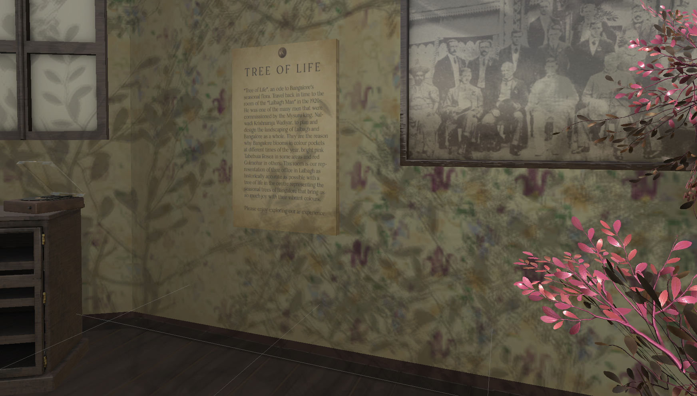
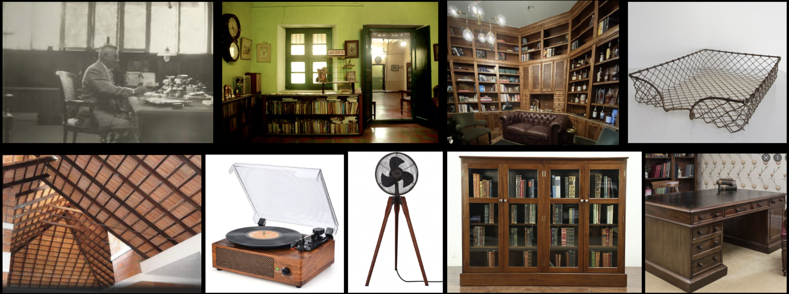
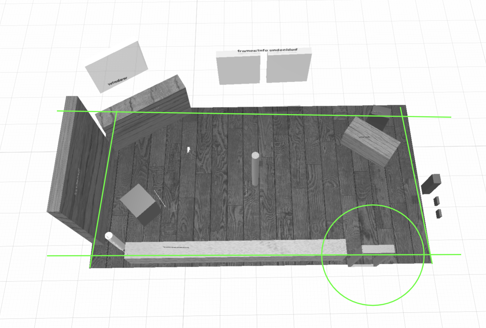

To create an immersive experience bringing to life an important story from the history of Bangalore, which will be displayed as part of the Showcase at Bangalore Design Week, 2022.
Step into a different time and place, literally and metaphorically.
Role
Ideated concepts from start to finish. Created prototypes and iterations with Unity. Worked on research as well as complete art direction and managed a team of 3D artists (Credits to Rajath B. and Jay K.) for asset creation.
Tree of Life - Screen recorded Walkthrough of Immersive Experience
"Tree of Life", an ode to Bangalore's seasonal flora. Travel back in time to the room of the "Lalbagh Man" in the 1920s.
He was one of the many men that were commissioned by the Mysuru king Nalwadi Krishnaraja Wadiyar to plan and design the landscaping of Lalbagh and Bangalore as a whole. They are the reason why Bangalore blooms in colour pockets at different times of the year. bright pink Tabebuia Rosea in some areas and red Gulmohar in others. This room is our representation of their office in Lalbagh as historically accurate as possible with a tree of life in the centre representing the seasonal trees of Bangalore that bring us so much joy with their vibrant colours.
Process + User Testing
As this showcase was part of Bangalore Design Week, the target audience was a mix of design professionals as well as aspiring design students. Thus there would be some understanding of AR spaces already, however it was unlikely they would have experienced something like this first hand. Keeping this in mind the space itself was not so large that would overwhelm the viewer, just big enough to call for some physical movement. As the experience was to be shown as part of a showcase, there would be someone present to walk users through the app.

📌 First round of testing - Aesthetics
The first few individuals who tested the space felt as though the movement was limited to one plane. Since we were using a 360 degree viewing format in AR, it would be important to create spaces of interest on the ceiling and floor as well. Considering this, I researched more intricate ceiling patterns drawing from the traditional Mangalore style roof. For the flooring, distressed wood was suggested and a vine pattern mimicking roots was also created.
📌 Second round of testing - Information
Once again keeping in mind the short attention spans of the users who were mostly students - the information regarding the experience was kept inside the AR space rather than on a physical board near the exhibition. There would be a higher chance of individuals engaging with the information if it was presented in a new and unexpected environment. It was also important for the space to be respectful of the people it was inspired by. Considering this, historical images of Lalbagh were added as well, such that the story would not leave the minds of the viewers.
Moodboard for the space created after conducting research on the look and feel of old Bangalore homes and Krumbeigal's actual workspace from the 1920's.


Blocking of the AR space, created after taking real time measurements and keeping in mind user experience while viewing.